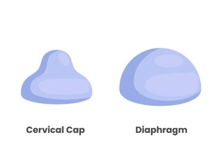
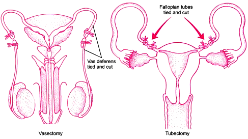

WHO के अनुसार जनन स्वास्थ्य का अर्थ है "जनन के सभी पहलुओं जैसे शारीरिक, भावात्मक, व्यवहारात्मक तथा सामाजिक आदि की सकुशलता स्थिति को ही जनन स्वास्थ्य कहते है "।
उत्तर: World Health Organisation (विश्व स्वास्थ्य संगठन)।
7 अप्रैल को विश्व स्वास्थ्य दिवस तथा
11 जुलाई को विश्व जनसंख्या दिवस मनाया जाता है।
निम्नलिखित कारणों से जनन स्वास्थ समस्या उत्पन्न होती है।
- बाल विवाह
- कम उम्र मे बार बार गर्भधारण
- प्रसर्वोत्तर देखभाल की कमी।
- जननांगो की अस्वच्छता के कारण ।
- शिशु मृत्यु दर, मातृ मृत्यु दर का अधिक होना ।
- ऋतुस्ताव सम्बन्धी समस्याओं की समझ की कमी।
- जन्म नियन्त्रण उपायों जैसे गर्भ निरोधको सम्बन्धी अज्ञानता ।
- यौन संचारित रोगो से सम्बन्धित जानकारी का अभाव तथा उपलब्ध भ्रांतियाँ ।
- परिवार नियोजन कार्यक्रम ।
- राष्ट्रीय जनसंख्या नीति।
- राष्ट्रीय ग्रामीण स्वास्थ्य मिशन (NRHM)
- शहरी परिवार कल्याण योजनाएँ।
- व्यापक टीकाकरण कार्यक्रम।
- जनन एवं बाल स्वास्थ्य सेवा कार्यक्रम।
- शिशु व गाँ के स्वास्थ्य की देखभाल ।
- शिशु मृत्यु दर व मातृ मृत्यु दर में कमी
- जनसंख्या स्थिरता / नियंत्रण।
- स्कूलों में जनन अंग और यौन शिक्षा के बारे में जानकारी देना।
- ऑडियो-वीडियो और मुद्रित सामग्री से जनता में जागरूकता फैलाना।
- अनियंत्रित जनसंख्या वृद्धि के नुकसान के बारे में जानकारी देना।
- विवाह योग्य और विवाहित लोगों को गर्भ निरोधक उपायों के बारे में बताना।
- गर्भवती माँ और नवजात शिशु की सही देखभाल और स्तनपान का महत्व समझाना।
- लिंग चयन या भ्रूण परीक्षण (जैसे अम्नियोसेंटेसिस) पर पूर्ण प्रतिबंध।
एम्नियोसेन्टेसिस सामान्यतः गर्भावस्था के 15वें से 20वें सप्ताह के बीच की जाने वाली भ्रूण परीक्षण की एक तकनीक है।
इस विधि में अल्ट्रासाउंड की सहायता से एक पतली सुई द्वारा गर्भाशय से एम्नियोटिक द्रव का थोड़ा-सा नमूना निकाला जाता है।
एम्नियोटिक द्रव में उपस्थित भ्रूणीय कोशिकाओं का संवर्धन (culture) कर उनके गुणसूत्रों की जाँच की जाती है, जिससे भ्रूण में होने वाली आनुवंशिक एवं गुणसूत्रीय विकृतियों का पता लगाया जाता है।
एम्नियोसेन्टेसिस का मानव समाज पर इसके लाभ / उपयोग (महत्व)
- इसके द्वारा गुणसूत्रीय असामान्यताओं का पता लगाया जाता है, जैसे—
डाउन सिंड्रोम
एडवर्ड सिंड्रोम
पाटाउ सिंड्रोम
- इससे उपापचयी विकारों की पहचान की जा सकती है, जैसे—
फिनाइलकीटोनूरिया (PKU)
क्रेटिनिज़्म
एल्केप्टोन्यूरिया
- यह भ्रूण में उपस्थित लिंग से संबंधित आनुवंशिक रोगों की पहचान में सहायक है, ताकि समय रहते उचित चिकित्सीय निर्णय लिया जा सके।
एम्नियोसेन्टेसिस पर वैधानिक रोक क्यों लगाई गई है?
वर्तमान समय में भ्रूण परीक्षण की इस तकनीक का गलत उपयोग किया गया है।
इसके द्वारा लिंग निर्धारण कर कन्या भ्रूण हत्या की जाने लगी, जिससे समाज में स्त्री-पुरुष अनुपात असंतुलित होने लगा।
इसी कारण भारत में लिंग निर्धारण हेतु एम्नियोसेन्टेसिस पर कानूनी प्रतिबंध लगाया गया है।
यदि ऐसा न किया जाए, तो भविष्य में सामाजिक समस्याएँ जैसे—
- विवाह में असंतुलन
- बहुपति प्रथा
- सामाजिक अव्यवस्था
- उत्पन्न हो सकती हैं।
जनन व बाल स्वास्थ्य कार्यक्रम निम्न उपलब्धियाँ है।
- शिशु मृत्युदर व मातृ मृत्यु दर में कमी हुई है।
- लोगो ने छोटे परिवार को अपनाना प्रारम्भ किया ।
- चिकित्सा सहायता प्राप्त प्रसवों की संख्या में वृद्धि हुई है।
- बध्य दम्पत्तियों की जाँच तथा उनके सन्तान पैदा करने के अवसर बढ़े हैं।
- यौन सम्बन्धित रोगों के बारे में लोगों की जागरुकता बढ़ी है।
अपेक्षाकृत कम समय में हुई जनसंख्या में तीव्र वृद्धि को जनसंख्या विस्फोट कहते हैं।
हमारे देश की जनसंख्या स्वतंत्रता के समय लगभग ५० करोड थी तथा यह बढ़कर सन् 1981 में लगभग 70 करोड हो गई और 2011 में हुई जनगणना के अनुसार 2011 में भारत की जनसंख्या ।2। करोड हो गई ।
जनसंख्या विस्फोट के कारण निम्नलिखित है।
- मृत्युदर में आयी निरंतर कमी ।
- मातृ मृत्युदर में कमी ।
- शिशु मृत्युदर में कमी ।
- जनन आयु वाले व्यक्तियों की संख्या में वृद्धि।
जनसंख्या विस्फोट के निम्न दुष्परिणाम है।
- शिक्षा व्यवस्था की समस्या
- रोजगार की समस्या
- निर्धनता
- खाद्यान्न आपूर्ति की समस्या
- स्वास्थ्य एवं चिकित्सा सेवा समस्या
जनसंख्या वृद्धि नियन्त्रण के निम्न उपाय है।
- जनसंख्या नियन्त्रण का सर्वाधिक प्रभावी तरीका गर्भ निरोधको का प्रचार प्रसार ।
- छोटे परिवार वाले दम्पतियों को प्रोत्साहन देना ।
- शिक्षा व्यवस्था
- परिवार कल्याण सम्बन्धि कार्यक्रम को बढ़ावा देना ।
एक उत्तम गर्भ निरोधक मे निम्नलिखित गुण होने चाहिए।
- यह पूर्ण रूप से कारगर होना चाहिए ।
- यह प्रयोग मे सरल होना चाहिए।
- इसका कोई दुष्प्रभाव नहीं होना चाहिए ।
- यह आसानी से उपलब्ध होने वाला होना चाहिए।
अथवा
गर्भनिरोधक उपायों की प्रमुख श्रेणियाँ (विधियाँ) कौन-सी हैं? समझाइए।
वर्तमान में बाजार में उपलब्ध गर्भनिरोधको को निम्न श्रेणियो मे वंगीकृत किया गया है।
- प्राकृतिक विधियाँ
- रोध रोधक
- अन्तः गर्भाशयी युक्तियाँ (IUD)
- गोलिया (Pills)
- शत्य क्रिया विधिया या बन्ध्याकरण
यह प्रक्रिया अंड तथा शुक्राणु के मिलने से रोकने के सिद्धांत पर कार्य करती है। इसमें निषेचन को रोका जाता है।
यह निम्न तरीको से की जाती है।
- बाहरी रस्खलन विधिः- इस प्रक्रिया में मैथुन के दौरान पुरुष वीर्य रस्खलन से पहले ही शीश्न को मादा के शरीर से बाहर निकाल लेता हैं।
- आवधिक संयमः- इसमे एक दम्पत्ति मासिक चक्र के 10 वे से 17 वे दिन के बीच में मैथुन नहीं करते क्योंकि इस दौरान गर्भधारण के बहुत अधिक अवसर होते हैं।
- स्तनपान अवस्था चक्रः प्रसव पश्चात माँ जब तक शिशु को स्तनपान कराती है तब तक ऋतुस्ताव चक्र या अण्डोत्सर्ग आरम्भ नहीं होता।
यह विधि लगभग 6 माह तक कारगर मानी गयी है, प्रसव पश्चात।
इस विधि में किसी भौतिक अवरोधक का प्रयोग करके नर तथा मादा युग्मंक को मिलने से रोक दिया जाता है।
जैसे:-
- कंडोम
- सर्वाइकल कैप
- गर्भनिरोधक झिल्ली या डायफ्रॉम

उत्तर:
जन्म नियंत्रण की अन्तः गर्भाशयी युक्तियाँ (Intra Uterine Devices – IUDs) वे गर्भनिरोधक साधन हैं, जिन्हें महिला के गर्भाशय (यूटरस) के भीतर स्थापित किया जाता है, ताकि गर्भधारण को रोका जा सके।
ये युक्तियाँ निषेचन या आरोपण (implantation) को रोककर गर्भधारण नहीं होने देतीं।
ये युक्तियाँ दीर्घकाल तक प्रभावी, सुरक्षित होती हैं और सामान्यतः डॉक्टर द्वारा लगाई जाती हैं।
उदाहरण- कॉपपर‑टी

उत्तर:
अंतः गर्भाशयी युक्ति (IUD) निम्नलिखित तरीकों से निषेचन क्षमता को कम करती है—
- IUD गर्भाशय में स्थानीय सूजन प्रतिक्रिया उत्पन्न करती है, जिससे शुक्राणुओं की सक्रियता कम हो जाती है।
- ताँबा युक्त IUD जैसे कॉपर-टी से निकलने वाले ताँबे के आयन शुक्राणुओं के लिए हानिकारक होते हैं, जिससे वे नष्ट हो जाते हैं।
- यह गर्भाशय की आंतरिक परत (एंडोमेट्रियम) को ऐसा बना देती है कि निषेचित अंडाणु का आरोपण नहीं हो पाता।
इस प्रकार IUD निषेचन तथा आरोपण दोनों को रोककर गर्भधारण की संभावना को कम कर देती है।
इंट्रा-यूटराइन डिवाइस
कॉपर-टी एक अंतः गर्भाशयी गर्भनिरोधक युक्ति (IUD) है, जो केवल गर्भधारण को रोकने के लिए प्रयोग की जाती है।
कॉपर-टी के प्रयोग से यौन संचारित रोगों से बचाव इसलिए नहीं हो पाता क्योंकि—
- कॉपर-टी गर्भाशय के अंदर लगाई जाती है।
- यह यौन संपर्क के समय रोगाणुओं को शरीर में प्रवेश करने से नहीं रोकती।
- इसमें किसी प्रकार की ढाल (रोक) नहीं होती।
गर्भ निरोधक गोलियाँ वे हार्मोनयुक्त दवाएँ हैं, जिन्हें महिलाएँ नियमित रूप से सेवन करती हैं, जिससे अंडोत्सर्जन रुक जाता है और गर्भधारण नहीं हो पाता।
ये गोलियाँ डॉक्टर की सलाह से ली जाती हैं और नियमित सेवन करने पर प्रभावी होती हैं।
गर्भ निरोधक गोलियाँ के प्रमुख उदाहरण हैं—
- माला-डी
- माला-एन
- सहेली
उत्तर:
बन्ध्याकरण या शल्यक्रिया विधि वह स्थायी गर्भनिरोधक उपाय है, जिसमें शल्यक्रिया (ऑपरेशन) द्वारा स्त्री या पुरुष की प्रजनन नलिकाओं को काटकर या बाँधकर बंद कर दिया जाता है, जिससे निषेचन संभव नहीं हो पाता।
यह विधि स्थायी होती है, इसलिए इसे परिवार पूर्ण होने के बाद अपनाया जाता है।
यह दो प्रकार से होती है।
- वेसक्टॉमी
- ट्यूबेक्टॉमी

(म. प्र. 2009)
वेसक्टॉमी पुरुषों में की जाने वाली एक स्थायी बन्ध्याकरण शल्यक्रिया है।
इस विधि में पुरुष की शुक्रवाहिनी (Vas deferens) को काटकर या बाँधकर बंद कर दिया जाता है। इसके कारण शुक्राणु वीर्य में नहीं पहुँच पाते, इसलिए निषेचन नहीं हो पाता और गर्भधारण रुक जाता है।
ट्यूबेक्टॉमी स्त्रियों में की जाने वाली एक स्थायी बन्ध्याकरण शल्यक्रिया है।
इस विधि में स्त्री की अंडवाहिनी नलिकाओं (Fallopian tubes) को काटकर या बाँधकर बंद कर दिया जाता है। इसके परिणामस्वरूप अंडाणु और शुक्राणु का मिलन नहीं हो पाता, इसलिए निषेचन रुक जाता है और गर्भधारण नहीं होता।
उत्तर:
चिकित्सीय गर्भ समापन (M.T.P.) वह चिकित्सीय प्रक्रिया है, जिसमें डॉक्टर द्वारा गर्भावस्था को सुरक्षित रूप से समाप्त किया जाता है।
यह प्रक्रिया तब अपनाई जाती है जब—
- गर्भधारण माँ के स्वास्थ्य के लिए हानिकारक हो
- भ्रूण में गंभीर विकृतियाँ हों
- बलात्कार या आकस्मिक गर्भधारण की स्थिति हो
M.T.P. का सुरक्षित काल
- एम.टी.पी. का सबसे सुरक्षित समय गर्भावस्था के प्रथम त्रैमास (पहले 12 सप्ताह) में होता है।
- इस अवधि में जोखिम सबसे कम होता है और जटिलताएँ नहीं के बराबर होती हैं।
M.T.P. का पूरा नाम —
Medical Termination of Pregnancy (चिकित्सीय गर्भ समापन)
STD क्या है?
वे रोग जो सम्भोग के समय यौन सम्बन्धो द्वारा एक व्यक्ति से दूसरे व्यक्ति में संचारित होते हैं, उन्हें यौन संचारित या लैंगिक संचारित रोग कहा जाता है। इन्हें यौन रोग या गुप्त रोग भी कहा जाता है।
जीवाणु द्वारा उत्पन (STD)
- सूजाकः यह रोग जीवाणुओं द्वारा होता है। सूजाक रोग नाइसेरिया गोनोरिया नामक जीवाणु से होता है।
लक्षणः- मूत्र त्याग के समय जलन ।
- सिफलिस :- सिफलिस यौन संचारित रोग होता है। सिफलिस रोग ट्रेपोनेमा पेलीडम जीवाणु द्वारा होता है।
लक्षणः- जननांगो पर घाव होना ।
विषाणु द्वारा उत्पन (STD) :-
- एड्स :- एड्स विषाणुओ द्वारा होता है। एड्स रोग प्रतिरक्षा तंत्र को कम कर देता है।
एड्स HIV नामक विषाणु से होता है।
लक्षण = निरन्तर ज्वर, मांसपेशियो मे दर्द ।
- हैपेटाइटिस B :- यह भी एक विषाणु जनित रोग है।
यह रोग HBV नामक विषाणु द्वारा होता है।
लक्षणः- पेट दर्द, जी मचलना आदि।
- जेनीटल वार्ट :- यह रोग Human papillomavirus द्वारा होता है।
लक्षण - पुरुषों के शिश्न व स्त्रियों के लेविया योनि व गर्भाशय में मस्से बन जाना ।
उत्तर:
किन्हीं दो यौन संचारित रोगों का नाम निम्न है।
- गोनोरिया
- सिफिलिस।
STD का पूरा नाम —
Sexually Transmitted Disease
(यौन संचारित रोग)
उत्तर:
किसी व्यक्ति को यौन संचारित रोगों की चपेट में आने से बचने के लिए निम्न उपाय अपनाने
- किसी अनजान व्यक्ति अथवा बहुत से व्यक्तियों के साथ यौन सम्बन्ध न रखें।
- मैथुन के समय सदैव कण्डोम का प्रयोग करें।
- यदि संक्रमण की कोई आशंका है तो तुरन्त ही प्रारम्भिक जाँच के लिए किसी योग्य डॉक्टर से मिलें और यदि रोग का पता चले तो पूरा इलाज कराएँ।
- यौन संचारित रोगों के सामान्य लक्षणों की जानकारी होनी चाहिए।
उत्तर:
हाँ, विद्यालयों में तथा किशोरावस्था में यौन शिक्षा देना आवश्यक है, क्योंकि—
- किशोरों को अपने शरीर में होने वाले शारीरिक और मानसिक परिवर्तनों की सही जानकारी मिलती है।
- यौन स्वास्थ्य, स्वच्छता और जनन अंगों की देखभाल के बारे में सही ज्ञान प्राप्त होता है।
- गलत धारणाओं, भ्रांतियों और अफवाहों से बचाव होता है।
- यौन संचारित रोगों (STD) और HIV/AIDS से बचाव की जानकारी मिलती है।
- असमय गर्भधारण और यौन शोषण से बचने में सहायता मिलती है।
यदि कोई दम्पत्ति गर्भ धारण नहीं कर पाता है, तो उसे बन्ध्यता या बाँझपन कहा जाता है।
उत्तर:
बन्ध्यता (Infertility) को दूर करने के लिए प्रयुक्त प्रमुख तकनीकें निम्नलिखित हैं—
- IVF (इन विट्रो फर्टिलाइजेशन / टेस्ट ट्यूब बेबी तकनीक)
- ICSI
- GIFT
- ZIFT
- कृत्रिम गर्भाधान (AI)
IVF एक ऐसी प्रजनन सहायता तकनीक है, जिसमें स्त्री के अंडाणु और पुरुष के शुक्राणु को प्रयोगशाला में मिलाकर निषेचन कराया जाता है।
प्रक्रिया :
- स्त्री को मासिक धर्म के तुरंत बाद फॉलिकल स्टिमुलेटिंग हॉर्मोन (FSH) दिया जाता है, जिससे एक के बजाय कई अंडाणु तैयार हो जाते हैं।
- अंडाणु निकालने के लिए नाभि के पास छोटा चीरा लगाया जाता है और अंडाणु प्राप्त किए जाते हैं।
- अंडाणु को शुक्राणु वाले विलयन में रखा जाता है, जहां निषेचन होता है और युग्मनज (Zygote) बनता है।
- जब भ्रूण 8–16 कोशिकाओं वाला हो जाता है, तब उसे गर्भाशय में प्रत्यारोपित (implant) किया जाता है।
इन विट्रो फर्टिलाइजेशन
(म. प्र. 2017, 18, 19)
उत्तर:
टेस्ट ट्यूब बेबी वह शिशु है जो IVF (इन विट्रो फर्टिलाइजेशन) प्रक्रिया के माध्यम से पैदा होता है।
इसे “टेस्ट ट्यूब बेबी” इसलिए कहते हैं क्योंकि निषेचन लैब के टेस्ट ट्यूब या डिश में होता है, न कि शरीर के भीतर।
ICSI एक सहायक प्रजनन तकनीक है।
यह विधि तब अपनाई जाती है जब पति के शुक्राणु में गतिशीलता कम हो या पूर्वशुक्राणु को अंडाणु को निषेचन नहीं कर पा रहे हों।
इस विधि में पति के एक ही शुक्राणु को सूक्ष्म पिपेट की सहायता से चुना जाता है। चुने गए शुक्राणु को सीधे स्त्री के अंडाणु (ओवम) के कोशाद्रव्य में डाला जाता है, ताकि निषेचन हो सके।
इंट्रा-साइटोप्लासमिक स्पर्म इंजेक्शन
उत्तर:
GIFT एक सहायक प्रजनन तकनीक है, जिसका उपयोग उन महिलाओं के लिए किया जाता है जिनमें अंडाणु का उत्पादन नहीं होता, लेकिन निषेचन और भ्रूण का विकास संभव है।
इसमें अन्य दाता स्त्री से अंडाणु प्राप्त किया जाता है। इस दाता अंडाणु को पति के शुक्राणु के साथ मिलाया जाता है। इस युग्मक (अंडाणु + शुक्राणु) को सीधे महिला की अंडवाहिनी में स्थानांतरित किया जाता है, ताकि वहां प्राकृतिक निषेचन और भ्रूण विकास हो सके।
(2022/22)
उत्तर: गैमीट इन्ट्राफेलोपियन ट्रान्सफर।
वीर्यसेचन (AI) वह विधि है, जिसका उपयोग उन पुरुषों के लिए किया जाता है जो प्राकृतिक संभोग के दौरान वीर्य को स्त्री की योनि में नहीं पहुँचाना पाते या जिनके वीर्य में शुक्राणु की कमी होती है।
इस विधि में पति या किसी स्वस्थ दाता के शुक्राणु (वीर्य) को सीधे स्त्री की योनि या गर्भाशय में प्रवेश करवा दिया जाता है, ताकि निषेचन और गर्भधारण संभव हो।
सरोगेसी वह प्रक्रिया है जिसमें एक महिला (सरोगेट माँ) अपने गर्भ में किसी अन्य महिला के लिए बच्चा पालती है और जन्म के बाद उसे उस महिला या दंपति को सौंप देती है।
कुछ स्त्रियों में अंडाणु का निषेचन तो हो जाता है, लेकिन किसी कारणवश भ्रूण का विकास (परिवर्धन) नहीं हो पाता। ऐसी स्थिति में—
स्त्री के अंडाणु और उसके पति के शुक्राणु का कृत्रिम रूप से निषेचन किया जाता है।
भ्रूण को 32-कोशिकाओं वाली अवस्था में, किसी अन्य इच्छुक महिला के गर्भाशय में प्रत्यारोपित (implant) किया जाता है।
वह महिला, जो भ्रूण को अपने गर्भ में पालती है और जन्म के बाद उसे वास्तविक माता-पिता को सौंपती है, सरोगेट माँ कहलाती है।